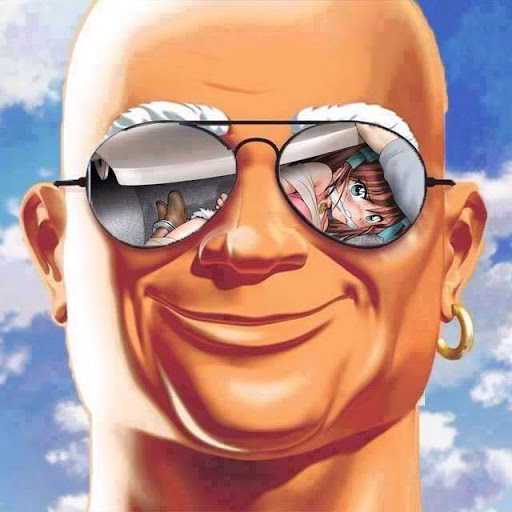

Что делает Всемирный фонд дикой природы?
Задача Всемирного фонда дикой природы остановить деградацию окружающей среды на нашей планете и построить будущее, в котором человечество будет жить в гармонии с дикой природой.

| 2004 | 2005 | 2006 | |
|---|---|---|---|
| Рубины | 43 | 51 | 79 |
| Изумруды | 28 | 34 | 48 |
| Сапфиры | 29 | 57 | 36 |